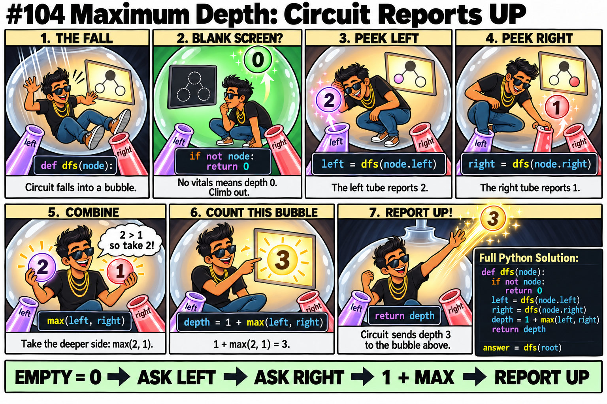
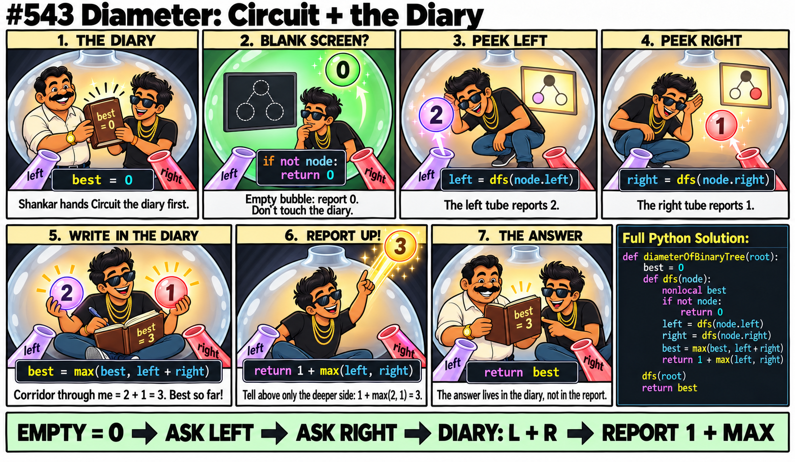
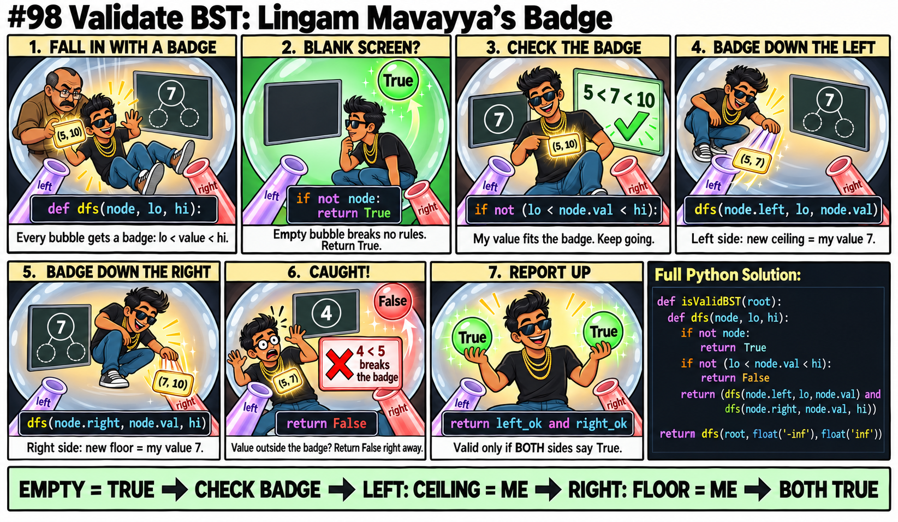
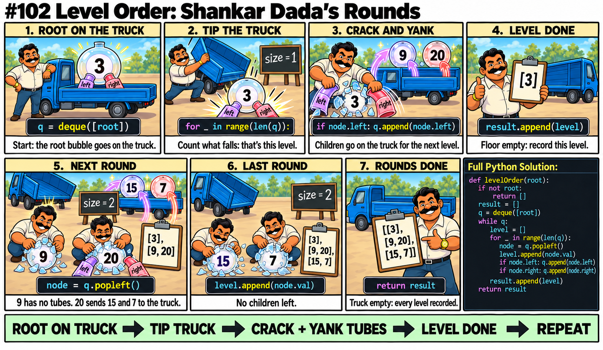

All 15 NeetCode Tree Problems — Bubble Room Edition
Each scene is a ritual Circuit (or Shankar) performs. Close your eyes, replay the scene, and the code writes itself.

if not node: return -1 # ???
if not node: return 1 # ???# Height: no vitals = 0 depth
if not node: return 0
# "Is it balanced?": empty = yes
if not node: return Truedef dfs(node):
if not node: return 0
result = 1 + ??? # combine WHAT?
L = dfs(node.left) # too late!def dfs(node):
if not node: return 0
L = dfs(node.left) # peek
R = dfs(node.right) # peek
return 1 + max(L, R) # THEN combine
L + R — "How long is the corridor passing THROUGH me?" Uses both tubes.1 + max(L, R) — "How deep can you reach through me?" Uses only the deeper side.best = max(best, L + R)
return 1 + L + R # NO! Above can't
# use both your tubesbest = max(best, L + R) # diary: corridor
return 1 + max(L, R) # report: depth
# Two DIFFERENT numbers!best = 0
def dfs(node):
# no nonlocal!
best = max(best, L + R)
# UnboundLocalError!best = 0
def dfs(node):
nonlocal best
...
best = max(best, L + R) # OK# Values can be NEGATIVE!
best = 0 # What if all values are -5?
# Answer should be -5, not 0!# Diameter: lengths always >= 0
best = 0 # OK
# Max Path Sum: values can be negative
best = float('-inf') # must start at -inf
left = dfs(node.left, lo, node.val)
right = dfs(node.right, node.val, hi)
if not (lo < node.val < hi): # too late!
return Falseif not (lo < node.val < hi):
return False # stop HERE!
return dfs(node.left, lo, node.val) \
and dfs(node.right, node.val, hi)dfs(node.left, lo, hi) # same badge!
dfs(node.right, lo, hi) # never tightens!# Lavender: new ceiling = my vitals
dfs(node.left, lo, node.val)
# Red: new floor = my vitals
dfs(node.right, node.val, hi)dfs(root, 0, 100) # What if val is -5?dfs(root, float('-inf'), float('inf'))
for _ in range(len(queue)) = start a new level.
for _ in range(len(q)): # len(q) changes
node = q.popleft() # as you add
q.append(node.left) # children!sz = len(q) # tip truck = freeze count
for _ in range(sz): # exactly this many
node = q.popleft()
...q.append(node.left) # What if None?
q.append(node.right) # Crash on next pop!if node.left: q.append(node.left)
if node.right: q.append(node.right)
# Only real bubbles go on the truckEach one solved with the ritual for its scene.
node.left, node.right = node.right, node.left.def invertTree(root):
if not root: return None
root.left, root.right = root.right, root.left
invertTree(root.left)
invertTree(root.right)
return root1 + max(left, right). "Deeper side + 1 for me."
1 + max(L, R) — pick the deeper side, add 1 for the current bubble.
def maxDepth(root):
if not root: return 0
return 1 + max(maxDepth(root.left), maxDepth(root.right))def isBalanced(root):
def dfs(node):
if not node: return (True, 0)
lb, lh = dfs(node.left)
rb, rh = dfs(node.right)
balanced = lb and rb and abs(lh - rh) <= 1
return (balanced, 1 + max(lh, rh))
return dfs(root)[0]my vitals match AND left same AND right same.
dfs(p, q) instead of dfs(node) — Circuit walks two trees simultaneously.def isSameTree(p, q):
if not p and not q: return True
if not p or not q: return False
return p.val == q.val and isSameTree(p.left, q.left) and isSameTree(p.right, q.right)isSameTree(root, sub) match from here? Yes → True, done!def isSubtree(root, sub):
if not root: return False
if isSameTree(root, sub): return True
return isSubtree(root.left, sub) or isSubtree(root.right, sub)def kthSmallest(root, k):
stk, n = [], root
while stk or n:
while n: # keep going lavender (left)
stk.append(n)
n = n.left
n = stk.pop() # pop = next smallest
k -= 1
if k == 0: return n.val # found Kth!
n = n.right # now try red (right)preorder[0] is always the root.lo > hi → no elements left → return None.idx = {v:i for i,v in enumerate(inorder)} lets you instantly find where a value sits in inorder.
def buildTree(pre, ino):
idx = {v: i for i, v in enumerate(ino)}
pi = [0] # pointer into preorder
def build(lo, hi):
if lo > hi: return None
v = pre[pi[0]]; pi[0] += 1 # next root from preorder
n = TreeNode(v)
m = idx[v] # find split in inorder
n.left = build(lo, m - 1) # left of split = lavender
n.right = build(m + 1, hi) # right of split = red
return n
return build(0, len(ino) - 1)"10,5,3,N,N,7,N,N,15,N,20,N,N"
class Codec:
def serialize(self, root):
r = []
def dfs(n):
if not n:
r.append("N"); return
r.append(str(n.val))
dfs(n.left); dfs(n.right)
dfs(root)
return ",".join(r)
def deserialize(self, data):
it = iter(data.split(","))
def build():
v = next(it)
if v == "N": return None
n = TreeNode(int(v))
n.left = build()
n.right = build()
return n
return build()left + right = path through me using both tubes. Beat diary? Overwrite.1 + max(left, right) = my depth (one tube only — above can only reach me through one tube).
left + right (both sides combined = path through this bubble).1 + max(left, right) (same as max depth! above can only use one arm).return diary, NOT the root's return value.
def diameterOfBinaryTree(root):
diary = 0
def dfs(node):
nonlocal diary
if not node: return 0
left = dfs(node.left)
right = dfs(node.right)
diary = max(diary, left + right) # path through me
return 1 + max(left, right) # my depth
dfs(root)
return diarymax(left,0) + my vitals + max(right,0) = best path through me using both tubes.my vitals + max(left, right, 0) = best straight line through me (one tube only).
node.val + max(l, r) instead of 1 + max(l, r).
val + max(L, R, 0) — straight line, one direction. Above can only reach me through one tube.max(L,0) + val + max(R,0) — U-shaped path through me using both tubes.def maxPathSum(root):
diary = float('-inf')
def dfs(n):
nonlocal diary
if not n: return 0
l = max(0, dfs(n.left)) # ignore negative
r = max(0, dfs(n.right)) # ignore negative
diary = max(diary, l + n.val + r) # path through me
return n.val + max(l, r) # straight line up
dfs(root)
return diary(lo, my_vitals) — everything left must be smaller than me.(my_vitals, hi) — everything right must be bigger than me.(-inf, +inf) at root — any value is valid at the top.lo < val < hi, not ≤. BST has no duplicates.
def isValidBST(root):
def dfs(n, lo, hi):
if not n: return True
if not (lo < n.val < hi): return False
return dfs(n.left, lo, n.val) and dfs(n.right, n.val, hi)
return dfs(root, float('-inf'), float('inf'))max(badge, my_vitals) — badge only grows, never shrinks.count + left_good + right_good.
root.val (root is always "good" since it has no ancestors).
def goodNodes(root):
def dfs(n, mx):
if not n: return 0
good = 1 if n.val >= mx else 0
mx = max(mx, n.val)
return good + dfs(n.left, mx) + dfs(n.right, mx)
return dfs(root, root.val)def lowestCommonAncestor(root, p, q):
node = root
while node:
if p.val < node.val and q.val < node.val:
node = node.left # both on lavender side
elif p.val > node.val and q.val > node.val:
node = node.right # both on red side
else:
return node # they split here = LCA!sz = len(q).[[10], [5, 15], [3, 7, 20]] — a list of lists, one per level.
from collections import deque
def levelOrder(root):
if not root: return []
res, q = [], deque([root])
while q: # truck not empty?
lvl = []
for _ in range(len(q)): # tip truck → process floor
n = q.popleft() # crack open
lvl.append(n.val) # read vitals
if n.left: q.append(n.left) # yank lavender → truck
if n.right: q.append(n.right) # yank red → truck
res.append(lvl) # level done!
return resif i == sz - 1: res.append(n.val) — only keep the last bubble per level instead of all of them.[10, 15, 20] — a flat list, one value per level (the rightmost).
def rightSideView(root):
if not root: return []
res, q = [], deque([root])
while q:
for i in range(sz := len(q)):
n = q.popleft()
if i == sz - 1: # last on this floor!
res.append(n.val)
if n.left: q.append(n.left)
if n.right: q.append(n.right)
return resPick the scene before you click.
| Scene | Character | Key Element | # | Problems |
|---|---|---|---|---|
| Scene 1 | Circuit | Peek doors, combine, tell above | 8 | #226, #104, #110, #100, #572, #230, #105, #297 |
| Scene 2 | Circuit + Diary | Same + diary for corridor | 2 | #543, #124 |
| Scene 3 | Lingam's Badge | Badge glows with tighter constraints | 3 | #235, #1448, #98 |
| Scene 4 | Shankar + Truck | Tip truck, crack, yank tubes | 2 | #102, #199 |